멀티미디어콘텐츠제작전문가 (2016-05-08 기출문제)
1과목: 멀티미디어개론
1. 비밀키 암호화 기법으로 거리가 먼 것은?
- AES
- DES
- Blowfish
- Diffie Hellman
(정답률: 66%)

2. 신뢰성 있는 통신을 위하여 최초 접속 시 3-way handshake를 수행하여 syn, syn＋ack, ack 신호를 통한 정확성 있는 통신에 이용되는 프로토콜은?
- HTTP
- TCP
- UDP
- IP
(정답률: 80%)
3. 사물통신, 사물인터넷과 같이 대역폭이 제한된 통신 환경에 최적화하여 개발된 푸시 기술 기간의 경량 메시지 전송 프로토콜은?
- MICS
- MTBF
- HTTP
- MQTT
(정답률: 80%)
4. 음성을 7비트에서 8비트로 양자화로 부호화 했을 때의 설명으로 틀린 것은?
- 표본화 잡음이 반으로 감소된다.
- 압축 특성이 개선된다.
- 양자화 잡음이 감소된다.
- 신장 특성이 개선된다.
(정답률: 67%)
5. 맥락 인식 모바일 증강현실 환경의 사용자 인터페이스의 특징 중 가장 거리가 먼 것은?
- 모바일 플랫폼
- 맥락 인식
- 직관적인 사용자 인터페이스 증강
- 깊이 인지
(정답률: 73%)
6. 컴퓨터가 사람을 대신하여 정보를 읽고 이해하고 가공하여 새로운 정보를 만들어 낼 수 있도록 이해하기 쉬운 의미를 가진 차세대 지능형 웹은?
- N Screen
- Smart Grid Web
- Semantic Web
- Topic Web
(정답률: 74%)
7. 유니코드에 대한 설명으로 틀린 것은?
- 64비트의 구조에 초점을 맞춘 코드이다.
- 문자집합, 문자인코딩, 문자정보, 데이터베이스, 문자들을 다루기 위한 알고리즘을 포함하고 있다.
- 유니코드 표준에 포함된 문자들은 각자의 고유한 코드 포인트를 가지고 있다.
- 전 세계의 모든 문자를 컴퓨터에서 일관 되게 표현할 수 있도록 설계된 산업표준이다.
(정답률: 78%)
8. IP 주소 203.10.24.27, 마스크 255.255.255.240 일 때 이 네트워크의 브로드캐스트 주소는?
- 203.10.24.33
- 203.10.24.0
- 203.10.24.27
- 203.10.24.31
(정답률: 56%)
9. 동영상을 끊김 없이 지속적으로 전송 처리하는 기술로 수신자에게 전송된 일부만으로도 재생 가능한 기술은?
- 스트리밍
- 푸시
- 쿠키
- 다중화
(정답률: 91%)
10. 일반적인 서버에서 클라우드 컴퓨팅 서비스를 생성하고 실행할 수 있도록 2010년 Rackspace사와 미국 항공우주국에서 수행한 프로젝트는?
- 애자일
- 블록체인
- 오픈스택
- O2O
(정답률: 63%)
11. UNIX에서 파일 소유자의 식별번호, 파일 크기, 파일의 최종 수정 시간, 파일의 링크 수, 파일이 저장된 디스크 블록의 주소 등의 내용을 가지고 있는 것은?
- Inode
- Super Block
- Mounting
- Boot Block
(정답률: 85%)
12. 스튜디오 안의 연주음은 청중에게 들려오는 직접파와 벽을 통해 반사되는 반사파가 합쳐져 음의 크기가 점차 평형상태에 이르게 되고, 이후 갑자기 연주를 멈추면 반사파만 순간 남게 된다. 이때의 반사파를 무엇이라 하는가?
- 2차 순응
- 잔향
- 순간 측음
- 회절
(정답률: 82%)
13. 다음 중 주변 장치나 CPU가 자신에게 발생한 사건을 리눅스커널에게 알리는 통신 방법은?
- 인터럽트
- 시그널
- 태스크
- PIC
(정답률: 78%)
14. IP 프로토콜 헤더의 필드로 라우팅 도중에 데이터 그램이 무한 루프에 들어가는 것을 방지하기 위해 인터넷에 머물 수 있는 최대 시간을 지정하는 필드는?
- IHL
- VER
- TTL
- FLAG
(정답률: 72%)
15. 전자우편의 메시지 무결성을 위해 사용되는 해쉬 함수에 대한 설명으로 거리가 먼 것은?
- 다양한 가변 길이의 입력에 적용 가능해야 한다.
- 가변적인 입력 길이와는 달리 출력은 고정적이다.
- 입력 값을 통해 결과 값을 얻는 것은 쉽지만 반대의 경우는 매우 어렵다.
- 입력 값에 따라 동일한 출력 값을 가질 수 있다.
(정답률: 62%)
16. 운영체제의 목적으로 거리가 먼 것은?
- 처리 능력 향상
- 반환 시간의 최대화
- 신뢰도 향상
- 사용 가능도 향상
(정답률: 83%)
17. 인터넷과 관련된 통신 프로토콜 중 잘못 연결된 것은?
- TCP/IP : 인터넷 환경에서 정보의 전송과 제어를 위한 프로토콜
- HTTP : 웹 문서를 송수신하기 위한 프로토콜
- SMTP : 전자우편 서비스를 위한 프로토콜
- PPP : 파일 전송 프로토콜
(정답률: 74%)
18. 다음 중 미국의 돌비 연구소에서 개발한 AC-3 음성 부호화 방식에서 사용되는 기본 채널은?
- 4채널
- 3.1채널
- 5.1채널
- 6.2채널
(정답률: 79%)
19. 애니메이션 특수효과 중 2개의 서로 다른 이미지나 3차원 모델 사이에 점진적으로 변화해 가는 모습을 보여주는 것을 무엇이라 하는가?
- 로토스코핑(Rotoscoping)
- 모핑(Morphing)
- 미립자 시스템(Particle System)
- 양파껍질 효과(Onion-Skinning)
(정답률: 83%)
20. 디지털 방식의 영상 및 음성까지 전달할 수 있으며, 커넥터의 크기도 작아서 (DVI 대비), AV기기에 쓰기에 적합한 인터페이스는?
- D-Sub
- 컴포지트
- Serial Port
- HDMI
(정답률: 82%)
2과목: 멀티미디어기획및디자인
21. 그림에서 제시된 이미지의 형태에서 느껴지는 디자인의 원리는 무엇인가?
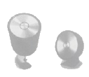
- 근접의 원리
- 착시의 원리
- 반복의 원리
- 대비의 원리
(정답률: 76%)
22. 다음 ( )에 들어갈 내용을 순서대로 바르게 나열한 것은?
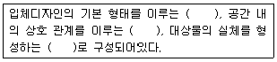
- 개념요소, 상관요소, 구조요소
- 실제요소, 상관요소, 개념요소
- 상관요소, 구조요소, 개념요소
- 상관요소, 개념요소, 구조요소
(정답률: 76%)
23. 색의 성질에 대한 설명 중 틀린 것은?
- 연두, 녹색, 보라는 중성색이다.
- 파랑, 청록, 남색은 차가운 느낌을 주기 때문에 한색이라고 한다.
- 난색이 한색보다 후퇴되어 보인다.
- 밝은 색은 실제보다 크게 보인다.
(정답률: 73%)
24. 비례의 3가지 유형으로 거리가 먼 것은?
- 사실적 비례(Realistic Proportion)
- 기하학적 비례(Geometric Proportion)
- 산술적 비례(Arithmetic Proportion)
- 조화적 비례(Harmonic Proportion)
(정답률: 56%)
25. 다음은 무엇에 관한 설명인가?
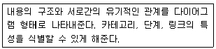
- 플로차트
- 스토리보드
- 레이아웃
- 그리드 시스템
(정답률: 66%)
26. 점묘화 또는 모자이크 벽화에서 볼 수 있으며, 직물에서의 베졸드 효과, 텔레비전이나 컴퓨터의 컬러모니터, 망점에 의한 원색 인쇄 등에 활용되는 혼합 원리는?
- 계시혼색
- 병치혼색
- 감법혼색
- 동시혼색
(정답률: 76%)
27. 픽토그램(Pictogram) 디자인에 대한 설명으로 옳은 것은?
- 항상 가까운 거리에서 판독하는 것을 전제로 한다.
- 문자정보의 보조역할로 디자인 한다.
- 기본적으로 디자인의 명료성과 단순화가 요구된다.
- 문화와 언어 관습의 차이를 반영한다.
(정답률: 73%)
28. 가산혼합 방식으로 모든 영상 이미지의 컬러 처리를 수행하는 방식은?
- Grayscale 방식
- Index 방식
- CMYK 방식
- RGB 방식
(정답률: 82%)
29. 동일한 색을 채도가 낮은 바탕에 놓았을 때는 선명해 보이고, 채도가 높은 바탕에 놓았을 때는 탁해 보이는 것을 무슨 대비현상 때문인가?
- 색상대비
- 채도대비
- 명도대비
- 계시대비
(정답률: 78%)
30. 로고타입(Logotype)의 기능이 아닌 것은?
- 독자성
- 상징성
- 가독성
- 신비성
(정답률: 76%)
31. 디자인의 미적원리 중 균형을 구성하는 요소인 대칭에 대한 설명 중 틀린 것은?
- 도형에서 서로 대응하는 각 부분에 서로 점이나 직선 또는 면을 개입시켜 서로 같은 거리에 배치된 상태를 말한다.
- 대칭을 뜻하는 영어는 Symmetry이다.
- 어느 기준에 대해 일정한 비율을 유지하는 미적 조화를 의미한다.
- 대칭을 크게 수평 대칭과 상하 대칭으로 나누어진다.
(정답률: 66%)
32. 색상은 동일하거나 유사한 색상으로 하고 2가지 톤의 명도차를 크게 둔 배색기법은?
- 톤 온 톤(Tone on Tone) 배색
- 톤 인 톤(Tone in Tone) 배색
- 리피티션(Repetition) 배색
- 세퍼레이션(Separation) 배색
(정답률: 81%)
33. 디더링(Dithering)에 대한 설명으로 옳지 않은 것은?
- 제한된 수의 색상을 사용하여 다양한 색상을 시각적으로 섞어서 만드는 작업이다.
- 포토샵의 디더링 옵션으로 색상간의 경계를 자연스럽게 흩어주는 방식인 디퓨젼이 있다.
- 해당 픽셀에서 표현하고자 하는 컬러와 가장 가까운 컬러 값을 사용하면 가장 우수한 화질을 얻을 수 있다.
- 두 개 이상의 컬러를 조합하면 원래 이미지와 좀 더 가까운 이미지를 표현할 수 있다.
(정답률: 52%)
34. 조형적 디자인 요소에서 형태를 이루는 요소가 아닌 것은?
- 점
- 위치
- 선
- 면
(정답률: 79%)
35. 디자인에 필요한 시각적인 원리 중에는 베르트하이머(Wertheimer)에 의해 정식화된 군화의 원리가 있다. 그중 비슷한 성질을 가진 것들은 비록 떨어져 있어도 서로 그룹을 이루고 있는 것처럼 보이는 원리를 무엇이라 하나?
- 유사성의 원리
- 폐쇄성의 원리
- 연속성의 원리
- 공동 운명의 원리
(정답률: 75%)
36. 마케팅 전략 수립에서 손익분기점 분석에 대한 내용으로 틀린 것은?
- 투자비용의 고정비용은 개발에 필요한 비용이며 인건비, 개발기간 동안의 외주비용, 복리후생비나 운영비용 등을 포함한다.
- 변동비란 제품의 제작 수량과 밀접한 관계가 있다.
- 소비자 가격은 가능한 높게 책정하여 이익 발생시점을 앞당길 수 있게 한다.
- 손익 분기 수량은 소비자가 가격을 결정하고 제품제작 단가가 나왔을 때, 최소 매출 수량을 타산하는 유용한 수단이다.
(정답률: 80%)
37. 타이포그래피에 대한 설명으로 틀린 것은?
- 메시지를 전달하는 데 있어 매우 중요한 요소이다.
- 회화, 사진, 도표, 도형 등을 시각화 한 것을 말하며, 문장이나 여백을 보조하는 단순한 장식적 요소이다.
- 글자를 가지고 하는 디자인으로 예술과 기술이 합해진 영역이다.
- 글자의 크기, 글줄 길이, 글줄 사이, 글자 사이, 낱말 사이, 조판 형식, 글자체 등이 조화를 이루었을 때 가장 이상적이다.
(정답률: 81%)
38. 다음 중 인터랙션 디자인(Interaction Design)의 중요 요소와 거리가 먼 것은?
- 내비게이션
- 정보 접근의 유형
- 화려함
- 상호작용을 위한 사용성 용이
(정답률: 78%)
39. 많은 아이디어를 얻기 위해 아무런 제약이 없는 상태에서 공상, 연상의 연쇄반응을 일으켜 아이디어를 내는 방식의 집단 사고 방법을 무엇이라 하는가?
- 시네틱스(Synectics)
- 연상의 기법(Association of Idea)
- 브레인스토밍(Brainstorming)
- 입·출력법(Input-Output Technique)
(정답률: 82%)
40. 스케치 중 가장 정밀한 스케치로 외관의 형태, 컬러, 질감 등을 표현한 것은?
- 스타일 스케치
- 스크래치 스케치
- 러프 스케치
- 아이디어 스케치
(정답률: 70%)
3과목: 멀티미디어저작
41. 다음 자바스크립트 코드의 결과 값은?
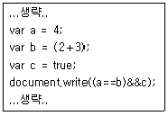
- a==b&&c
- false
- 4
- 4==5&&false
(정답률: 76%)
42. HTML5 CANVAS API 요소에 대한 설명으로 틀린 것은?
- CANVAS의 좌표계는 화면 좌측 하단이 (0,0)의 위치이다.
- CANVAS의 좌표계는 오른쪽으로 갈수록 X좌표가 증가한다.
- CANVAS는 선을 그리기 위해 stroke 함수를 호출할 수 있다.
- CANVAS는 선을 그리기 위해 lineTo 함수를 호출할 수 있다.
(정답률: 58%)
43. 다음 SQL문의 형식에서 ( )에 들어갈 알맞은 단어는?
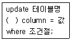
- into
- set
- from
- to
(정답률: 59%)
44. AJAX에 대한 설명으로 틀린 것은?
- HTTP 서버와 비동기적으로 통신하는 자바스크립트 클라이언트이다.
- JSON 형태의 데이터를 사용하여 통신한다.
- 페이지의 필요한 부분을 부분적으로 갱신하는 기술이다.
- HTTP 서버와 통신할 때마다 페이지 전체를 갱신(Refresh)해야 한다.
(정답률: 70%)
45. Html5의 태그 중에서 형광펜을 사용하여 강조하는 효과를 나타내는 것은?
- ＜i＞
- ＜mark＞
- ＜keygen＞
- ＜small＞
(정답률: 79%)
46. 스타일시트(CSS)에서 텍스트 문자속성에 대한 설명으로 틀린것은?
- text-align : 글자 정렬
- text-indent : 화면 왼쪽으로 들여쓰기 지정
- letter-spacing : 글자와 글자사이의 간격 지정
- text-decoration : 소문자나 대문자로 변환
(정답률: 77%)
47. 자바스크립트의 변수에 대한 설명으로 옳은 것은?
- 자바스크립트 변수 선언 후 값을 부여하지 않으면 null을 출력한다.
- 수치형 데이터를 표현하려면 integer 키워드를 이용하여 선언한다.
- var 키워드로 변수를 선언한다.
- 자바스크립트는 객체형 데이터를 표현할 수 없다.
(정답률: 71%)
48. 다음 플래시5 함수에서 추출되는 값은?
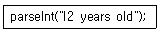
- 12
- 12 years old
- 12 years
- years old
(정답률: 67%)
49. Html5에서 ( )에 들어갈 태그로 적절한 것은?
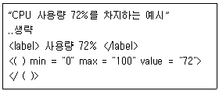
- datalist
- textarea
- option
- meter
(정답률: 68%)
50. 데이터베이스에서 병행수행 연산에 대해 적절한 제어가 되지 않을 경우 발생하는 문제가 아닌 것은?
- 갱신 분실(Lost Update)
- 중복성(Redundancy)
- 모순성(Inconsistency)
- 연쇄 복귀(Cascading Rollback)
(정답률: 44%)
51. SAX(Simple API for XML)에 대한 설명으로 거리가 먼 것은?
- SAX는 XML문서를 처리하기 위한 응용프로그램 인터페이스이다.
- 다양한 객체지향 프로그래밍 언어에 사용할 수 있다.
- SAX는 트리기반의 인터페이스를 사용하여 XML문서를 처리한다.
- DOM은 XML문서 전체를 메모리에 적재하기 때문에 SAX에 비하여 수행속도가 다소 저하될 수 있다.
(정답률: 45%)
52. 다음 자바스크립트 코드의 결과 값은?
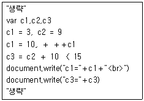
- c1 = 13, c3 = true
- c1 = 14, c3 = false
- c1 = 15, c3 = false
- c1 = 15, c3 = true
(정답률: 60%)
53. 다음 SQL문을 실행한 결과는? (단, 출력 행 순서는 무방)
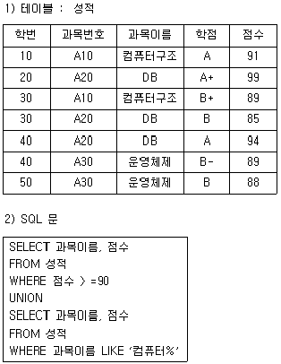
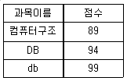
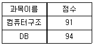
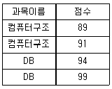
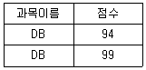
(정답률: 65%)
54. 관계형 데이터 모델에서 테이블의 열(Column)을 일컫는 또 다른 용어는?
- 도메인(Domain)
- 릴레이션(Relation)
- 튜플(Tuple)
- 속성(Attribute)
(정답률: 55%)
55. XML 문서작성자가 현재 XML 문서가 어떤 마크업 언어로 작성된 것인지를 XML 문서를 해석하는 측에 알려줄 목적으로 정의하는 것은?
- DOCTYPE
- DTD
- CSS
- SYSTEM
(정답률: 64%)
56. 홈페이지에 이미지를 보여주는 ＜IMG＞ 태그가 존재할 때 시각장애인들에게 이미지 대신 음성으로 안내하기 위해 필요한 ＜IMG＞ 태그의 속성은?
- ALT
- HEIGHT
- SRC
- WIDTH
(정답률: 65%)
57. HTML이나 XML문서의 구조적 정보를 제공하고 자바스크립트 프로그램에서 문서 구조, 외양, 내용을 변경하여 접근하는 방법을 제공하는 모델을 의미하는 용어는?
- DOM
- CSS
- DOCUMENT
- SCRIPT
(정답률: 54%)
58. 다음 중 객체지향 기법에서 하나 이상의 유사한 객체들을 묶어서 하나의 공통된 성격을 표현한 것은?
- 함수
- 클래스
- 메시지
- 메소드
(정답률: 73%)
59. 객체지향 개념 중 정보은닉에 대한 설명으로 틀린 것은?
- 객체에 대한 추상적인 관점을 제공한다.
- 객체의 내부 표현이 다른 객체에 영향을 주지 않으면서 바뀔 수 있도록 해 준다.
- 객체 내부가 외부 환경으로부터 보호될 수 있도록 해 준다.
- 누구나 접근 가능한 화이트 박스 개념의 객체지향 기법이다.
(정답률: 74%)
60. 럼바우(Rumbaugh)의 객체지향분석에서 분석기법의 모델링과 관련이 없는 것은?
- 객체 모델링
- 절차 모델링
- 동적 모델링
- 기능 모델링
(정답률: 60%)
4과목: 멀티미디어제작기술
61. 실내 음향 설계의 목표 중 가장 거리가 먼 것은?
- 방해되는 소음이 없어야 한다.
- 음성은 명료하게 들려야 한다.
- 에코 현상은 가능한 증폭 시키도록 한다.
- 실내 전체에 대한 음압 분포가 균일해야 한다.
(정답률: 80%)
62. 다음 중 조명의 주목적이 아닌 것은?
- 입체감과 질감을 만든다.
- 반향(Echo)을 얻는다.
- 필요한 밝기를 얻는다.
- 컬러 밸런스를 만든다.
(정답률: 81%)
63. 위압감이나 우위의 심리적 표현에 매우 좋은 앵글은?
- 수평앵글
- 하이앵글
- 로우앵글
- 경사앵글
(정답률: 71%)
64. 시간에 따른 음의 진폭 변화과정(Attack, Decay, Sustain, Release)을 나타내는 것은?
- Phon
- Sound Speed
- Wave Length
- Envelop
(정답률: 59%)
65. 영상 압축 기법 중 새로운 화면정보를 모두 다 기록하지 않고, 앞 화면과의 차이만을 기록하는 방식은?
- 동작보상 기법
- 주파수 차원 변환 기법
- 서브샘플링 기법
- 델타프레임 기법
(정답률: 69%)
66. 솔리드 모델링의 기본요소 중 3차원 프리미티브에 해당되지 않는 것은?
- 구(Sphere)
- 관(Tube)
- 원통(Cylinder)
- 선(Line)
(정답률: 74%)
67. 소리나 빛이 진행하다가 장애물을 만나면 차단되지 않고, 장애물의 뒤쪽까지 전파되는 현상은?
- 회절
- 반사
- 간섭
- 굴절
(정답률: 64%)
68. 어떤 음의 최소 가청한계가 다른 음에 의해 상승하는 현상은?
- 반사현상
- 회절현상
- 잔향현상
- 마스킹현상
(정답률: 67%)
69. 오디오 신호레벨이 일정한 레벨(스레숄드 레벨)이하가 되면 재빨리 증폭률을 저하시켜 출력 레벨을 낮추어 주는 장치는?
- 이퀼라이저
- 노이즈 게이트
- 압신기
- 이펙터
(정답률: 58%)
70. 다음 중 24프레임인 영화 필름 영상을 30프레임의 비디오 신호로 변환하는 작업은?
- 텔레시네(Telecine)
- 키네스코프(Kinescope)
- 씨네룩(Cinelook)
- 키네코(Kineco)
(정답률: 56%)
71. MPEG-2 압축방식의 설명으로 거리가 가장 먼 내용은?
- 목표 전송률은 0.8Mbits/sec 이하이다.
- MPEG-1에 대한 순방향 호환성을 지원한다.
- 광범위한 신호형식에 대응하기 위해 프로파일 및 레벨에 따라 복수 개의 사양이 정해져 있다.
- 순차 주사 방식과 격행 주사 방식 모두를 지원한다.
(정답률: 59%)
72. 디지털 영상에서 발생하는 Jag에 대한 설명으로 옳은 것은?
- 계단형 화질 왜곡 현상
- 복사에 의한 화질의 열화
- 압축에 의한 정보량 축소
- 잡음(Noise)에 대한 강한 면역성
(정답률: 68%)
73. 디지털 방송의 음성 부호화에서 사용되는 PCM방식의 경우 표본화 주파수를 입력 신호의 2배가 되지 않는 주파수로 표본화 하면 높은 주파수 성분이 낮은 주파수 신호에 침범하여 신호가 왜곡된다. 이를 무엇이라고 하는가?
- 양자화 왜곡
- 압축 에러
- 부호화 잡음
- 엘리어싱 에러
(정답률: 37%)
74. 하나의 화면이 서서히 사라지면서 다른 화면이 나타나는 화면전환 기법은?
- 컷(Cut)
- 달리(Dolly)
- 디졸브(Dissolve)
- 와이프(Wipe)
(정답률: 78%)
75. 음원이 움직일 때 진동수의 변화가 생겨 진행방향 쪽에서는 발생음보다 고음으로 진행방향의 반대쪽에서는 저음으로 들리는 현상은?
- 에코 효과
- 도플러 효과
- 회절 현상
- 휴젠스 원리
(정답률: 69%)
76. 디지털 카메라로 어두운 곳에서 촬영 시(時) 조치사항으로 거리가 먼 것은?
- 외부 플래시를 사용하여 빛의 양을 늘려준다.
- ISO 감도를 낮추어 적은 빛에서도 민감하게 한다.
- 셔터스피드를 낮추어 준다.
- 삼각대를 이용하여 미세한 흔들림이 발생하지 않도록 한다.
(정답률: 61%)
77. 5.1 멀티채널, 32kbps에서 640kbps의 비트율을 가지고 압축률을 높이기 위해 채널 간 마스킹 특성을 이용하는 오디오 코딩방식은?
- AC-1
- AC-2
- AC-3
- MP3
(정답률: 69%)
78. 캠코더 자체가 전, 후진하면서 피사체를 촬영하는 방법은?
- 컷(Cut)
- 달리(Dolly)
- 디졸브(Dissolve)
- 와이프(Wipe)
(정답률: 76%)
79. 움직이는 피사체는 화면에 고정시키고 배경화면이 이동하는 것처럼 촬영하는 것으로 속도감 있는 영상이 얻어지는 촬영 기법은?
- 패닝
- 틸팅
- 주밍
- 클로즈업
(정답률: 64%)
80. 3D 모델링 방식에서 넙스(NURBS)의 기본 구성요소로 거리가 가장 먼 것은?
- Vertex
- Curve
- Isoparm
- Matrix
(정답률: 50%)